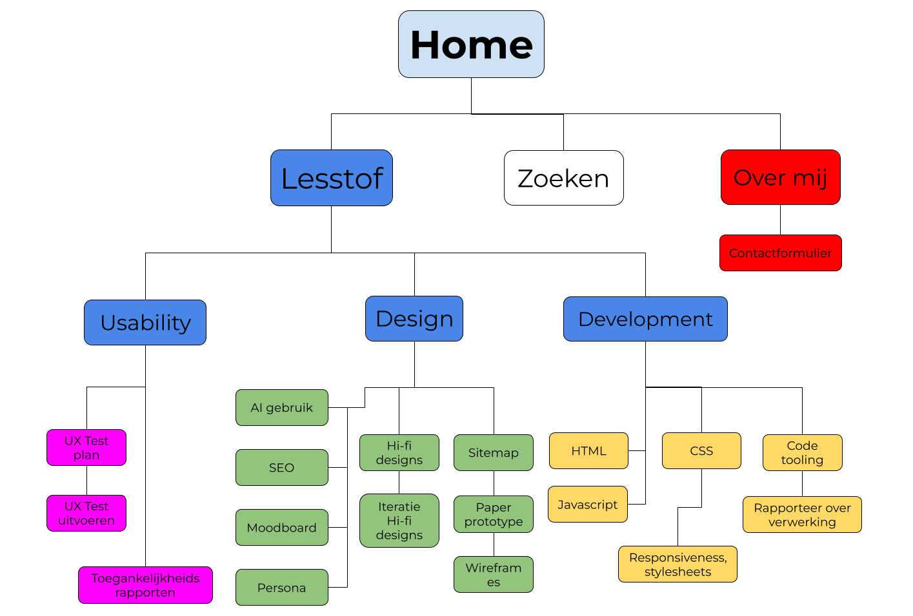

Sitemap
Wat is een Sitemap en waarom is het handig?
In de tweede week van FDD leerden we wat een sitemap is. Simpelgezegd, een sitemap is bijna letterlijk een kaart van hoe je de site moet navigeren. De map begint bij de pagina waar je het eerst op stuit, de “Homepage”. Op de meeste websites kan je vanuit deze pagina navigeren naar andere pagina's.
Er staat bovenaan de site bijvoorbeeld een balk met een kopje “Over ons”. De site kan ook uitvouwbare menu's hebben, met meer opties die naar andere pagina's gaan. Dit zouden bijvoorbeeld de pagina's “Producten”, “Woord van onze experts” en kunnen zijn. Vanuit de pagina “Over ons” zou je kunnen doorklikken naar de pagina “Contact” (om bijvoorbeeld iets te retourneren). Dan loopt er een lijntje vanuit “Over ons” naar “Contact”, hiermee geef je aan dat je vanuit de pagina “Over ons” kan navigeren naar “Contact”. Vanuit “Producten” kan je weer navigeren naar de pagina “Meest verkocht” met de populairste items, of naar de pagina “Zoek een product”, waar je zelf een product kan opzoeken.

Voorbeeld van een sitemap.
Mijn sitemap
Op deze site staan alle onderdelen van de lesstof die we bij FDD hebben geleerd, dus is de sitemap van deze site vooral in de vertakkingen erg druk. Hieronder staat de eerste versie van de sitemap van mijn site, waarbij ik elk onderwerp als apart kopje heb vermeld. Dit maakt het redelijk chaotisch om te bekijken, vooral het onderdeel “Design” bevat erg veel kopjes en daarom heb ik ook de kopjes waaronder ze samen staan groter gemaakt, zodat het voor zowel mij als anderen overzichtelijker is om te zien wat echt de belangrijke stappen zijn. Ondanks dat het chaotisch eruit ziet, is het voor mij wel makkelijker om de stappen te doorlopen om op een pagina te komen.
Inmiddels is mijn sitemap uitgebreid en bevat het meer pagina's, en zijn de namen veranderd. De eerste versie die hier te zien is, was gebaseerd op de plannning van het semester. In deze planning stonden niet alle items die eigenlijk in de site moesten, en in de loop van het semester leerde ik hoe de onderwerpen in elkaar vloeiden.